If you want a taste of heaven visit nepal
LOCATION
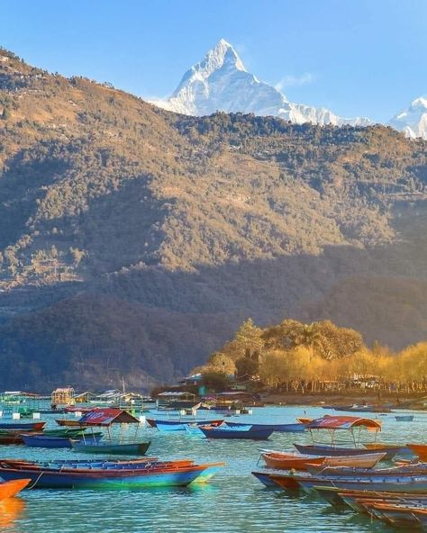
Pokhara
Pokhara is known for its stunning natural beauty, including majestic mountains, crystal-clear lakes, and
lush green forests.
Some places to visit are Phewa Lake, Explore the World Peace Pagoda, Trek to Annapurna Base Camp,
International Mountain Museum and try
paragliding.
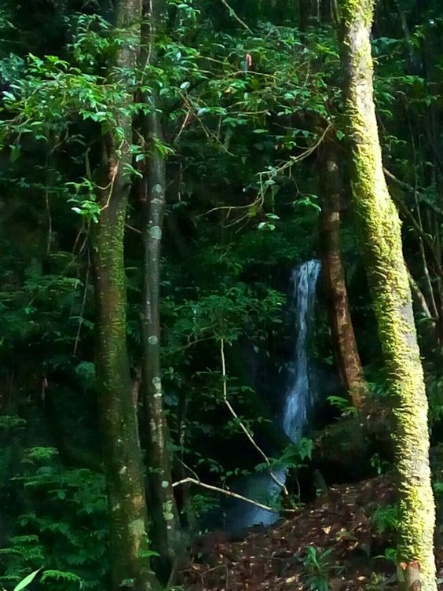
Sundarijal
Sundarijal is a scenic town located in the northeast corner of Kathmandu valley, Nepal. It
is situated at an altitude of 1,350 meters above sea level and is known for its stunning natural beauty,
lush forests, and refreshing waterfalls.Sundarijal is a popular destination for hiking and trekking
enthusiasts.
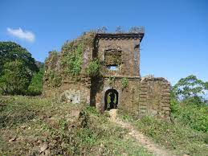
Sindhuli
Sindhuli Gadhi played a significant role in the unification of Nepal under the leadership of King Prithvi
Narayan Shah.
Today, Sindhuli Gadhi is a popular tourist destination and a symbol of Nepal's rich history and cultural
heritage. Visitors
can explore the ruins of the fort, which include several temples and structures.
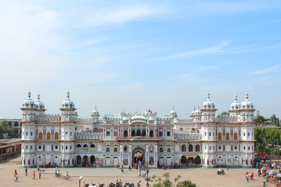
Janakpur
Janakpur is a popular tourist destination located in the Dhanusha district of Nepal. It is known for its
rich cultural heritage
and one of the holiest cities in Nepal, as it is the birthplace of Goddess Sita.
Apart from the Janaki Temple, Janakpur has several other temples including the Ram Mandir, Dhanushadham,
and the Ratna Sagar Temple.

Dhap Dam
Dhap Dam is a stunning location in Nepal Bagmati Province, 26 kilometers from Kathmandu. It is a 24 m height
by 175 m wide dam
that has a maximum water storage capacity of 850,000 m3. It was constructed to boost the Bagmati River water
flow during the dry season.
It is popular as hike destination. The view is really peacefull to watch.
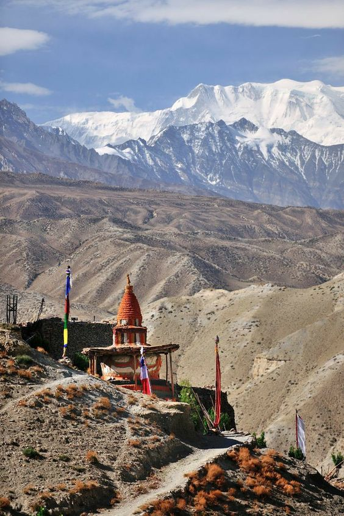
Mustang
Mustang is known for its stunning natural landscapes, rich cultural heritage, and traditional lifestyle.
The region is home to the Mustang Valley, which is surrounded by snow-capped peaks, deep gorges, and vast
expanses of barren land.
One of the main attractions in Mustang is the ancient walled city of Lo Manthang.
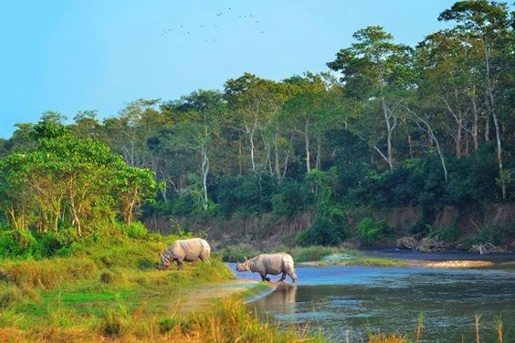
Chitwan
Chitwan is a popular tourist destination located in the southwestern part of Nepal.
It is known for its diverse wildlife, beautiful natural landscapes.
The Chitwan National Park is the main attraction in the region and is a UNESCO World Heritage Site.
Chitwan is also known for its beautiful natural landscapes. Visitors can go on a canoe ride, rafting, or
fishing.
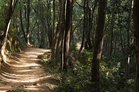
Shivapuri
The Shivapuri National Park is the main attraction in the region and is a popular destination for nature
lovers and adventure seekers.
The park is home to a wide variety of flora and fauna, including several rare and endangered species of
animals and birds.
Visitors can explore the park on a hiking or trekking trail, which offers stunning views of the surrounding
hills .
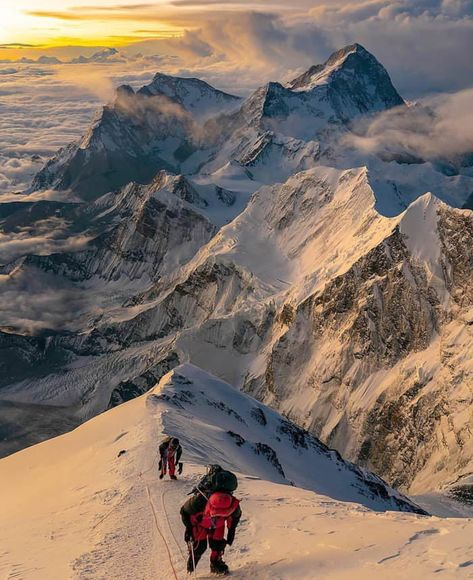
Mt.Everest
Mount Everest is a world-famous tourist destination located in the Himalayas
It is the highest mountain peak in the world.The most popular way to experience Mount Everest is by trekking
to its base camp
, which offers stunning views of the surrounding mountains and glaciers. The Everest Base Camp
Trek is a challenging but rewarding experience and takes visitors through the picturesque villages.
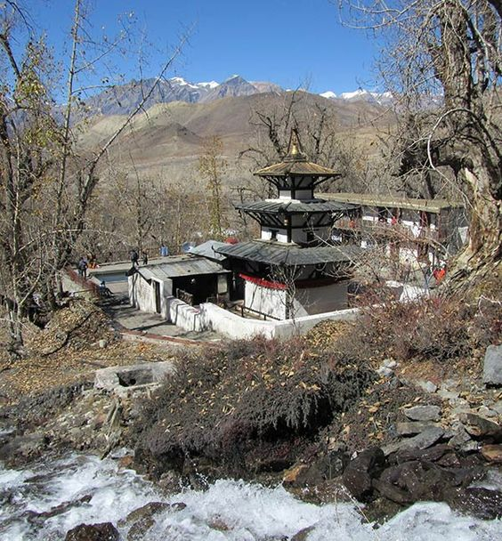
Muktinath
The Muktinath Temple is the main attraction in the region and is dedicated to Lord Vishnu in the Hindu
religion and to the
Bodhisattva Avalokitesvara in the Buddhist religion.Muktinath is also known for its unique cultural heritage,
which includes
the traditional lifestyles and customs of the Thakali people, who are the indigenous inhabitants of the
region.
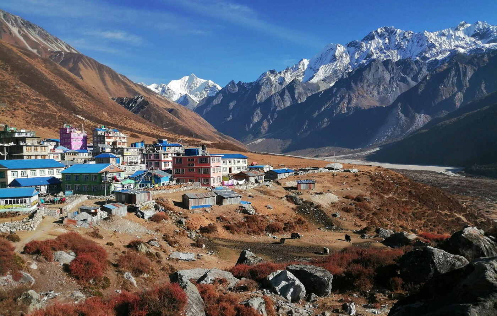
Langtang
The Langtang region is known for its stunning natural beauty, which includes high mountain peaks, glaciers.
It is also home to several important rivers which are popular destinations for rafting and kayaking.
Main attractions of the Langtang region is the Langtang Valley trek, which takes visitors
through picturesque villages up to the high mountain passes.
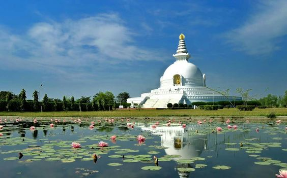
Lumbini
Lumbini is a sacred site which is renowned as the birthplace of Lord Buddha.It is one of the most important
pilgrimage sites for Buddhists from
around the world and is recognized as a UNESCO World Heritage Site.The main attraction of Lumbini is the Maya
Devi Temple,
which is built around the spot where Lord Buddha was born..